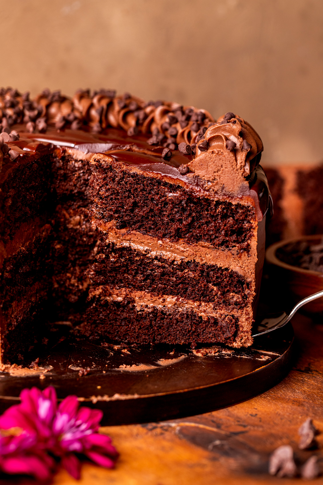

Chocolate Cake

Description
A refreshing and creamy Indian yogurt-based drink blended with sweet mangoes, perfect for hot summer days. This traditional beverage combines the richness of yogurt with the tropical sweetness of ripe mangoes, creating a smooth and satisfying treat that's both nutritious and delicious.
Ingredients
- 2 cups ripe mango, peeled and chopped
- 1 cup plain Greek yogurt
- 1/2 cup cold milk
- 2-3 tablespoons sugar (adjust to taste)
- 1/4 teaspoon ground cardamom
- 1 cup ice cubes
- Pinch of salt
- Fresh mint leaves for garnish (optional)
Steps
- Wash, peel, and chop the ripe mangoes into small pieces.
- Add the chopped mangoes to a blender along with the yogurt, milk, and sugar.
- Add the ground cardamom and a pinch of salt to enhance the flavors.
- Add ice cubes to the blender for a chilled drink.
- Blend all ingredients on high speed for 1-2 minutes until smooth and creamy.
- Taste and adjust sweetness by adding more sugar if needed.
- Pour the Chocolate Cake into tall glasses.
- Garnish with fresh mint leaves or a sprinkle of cardamom if desired.
- Serve immediately while cold and enjoy!
Home